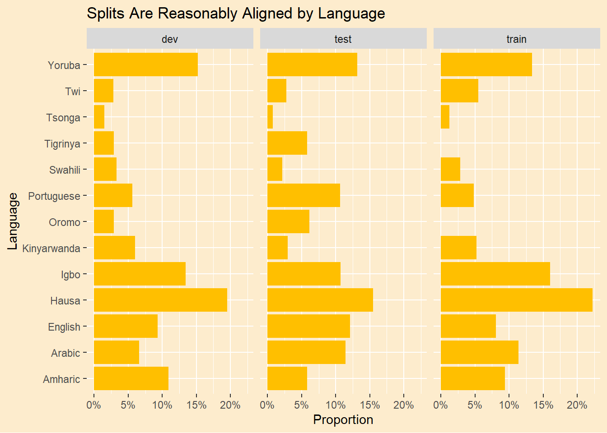
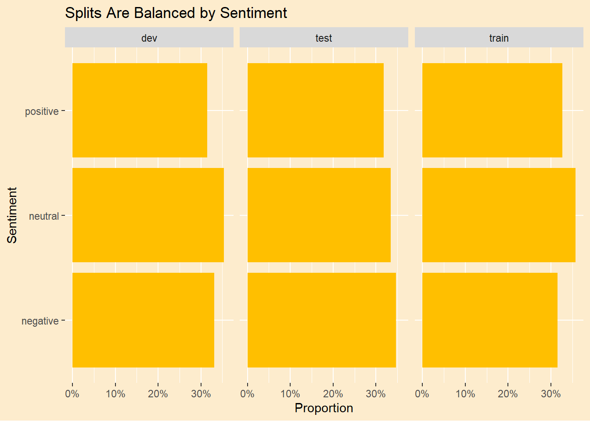

In Part 2 of this series we learned that our valence measurement of the words in the Afrisenti data set did not agree well with the sentiments already provided. While the sentiments we derived made sense in general, they were determined without any knowledge of how the original sentiments were determined. For this post we will apply machine learning techniques to try to reverse engineer the thinking that went into the sentiment assignments.
In our previous analysis we were only in agreement with original data about 50% of the time. Can our trained models do any better? If we train on the native language tweets will that get a better result than training on the the translated tweets? Let’s see.
We will take the usual approach of splitting the data into test and training sets then run a classifier model on the training set and finally validate it against the test set.
suppressPackageStartupMessages({library(tidyverse)library(tidytext)library(tidymodels)library(textrecipes)library(vip)library(butcher)library(yardstick)library(hardhat)})# set up some chart defaultstan1 <-"#FDECCD"yellow1 <-"#FFBF00"green1 <-"#007000"theme_afri <-function(...){# making a function allows passing further theme elements ggplot2::theme(plot.background =element_rect(fill = tan1, color =NA),panel.background =element_blank(),legend.background =element_blank(),legend.box.background =element_blank(),legend.key =element_blank(), ... ) }# the the previously translated tweets.afrisenti_translated <- readr::read_csv('https://raw.githubusercontent.com/apsteinmetz/tidytuesday/master/2023-02-28_african_language/data/afrisenti_translated.csv',show_col_types =FALSE) |>mutate(lang =as.factor(assigned_long)) |>mutate(sentiment =as.factor(label)) |>mutate(intended_use =as.factor(intended_use)) |>select(lang,tweet_num,sentiment,translatedText,tweet,intended_use)afrisenti_translated
# A tibble: 111,720 × 6
lang tweet_num sentiment translatedText tweet intended_use
<fct> <dbl> <fct> <chr> <chr> <fct>
1 Amharic 1 negative Amhara region needs moderatio… አማራ … dev
2 Amharic 2 negative Having a mood in a way that a… ሰውን … dev
3 Amharic 3 negative Domestic violence - without h… የቤት … dev
4 Amharic 4 negative Ethiopia, what was your role … Ethi… dev
5 Amharic 5 negative No matter how Oromo learns, t… ኦሮሞ … dev
6 Amharic 6 negative Tish, dark powder, are you st… ቲሽ ጨ… dev
7 Amharic 7 negative Local residents said that the… በምዕራ… dev
8 Amharic 8 negative What happened to Schimmels is… ያየሰው… dev
9 Amharic 9 negative An unstable country does not … ያልተረ… dev
10 Amharic 10 negative The idiot and the bubble, the… ደደቡ … dev
# ℹ 111,710 more rows
Pre-Processing. Can We Make Our Job Easier?
When we measured the tweets using a sentiment lexicon, only the words in the lexicon contributed to the sentement measurement. Everthing else was neutral. With machine learning everthing counts and the more words we have the bigger the model and the longer it will take to train. It is common in analyzing text to drop low-information words or “stop words.” In English, words like “the” and “that.” We want to build a list of stop words relevant to our data set. On Kaggle I found a list of stop words in various African languages. It doesn’t cover every language in our data set but will reduce the matrix size a bit. We’ll add that to the lexicon of English stop words and a custom lexicon built from a quick inspection of the data set.
# ----- SETUP ------------------------------stop_words_af <- readr::read_csv('https://raw.githubusercontent.com/apsteinmetz/tidytuesday/master/data/stopwords_af.csv', show_col_types =FALSE)# add my stop words to defaultsmy_stop_words =tibble(word =c("http","https","dey","de","al","url","na","t.co","rt","user","users","wey","don",as.character(1:100)))# make a stopword list of any 1-character words# this is a somewhat arbitrary rubric for African language stop wordsstop_words_1char <- afrisenti_translated |>unnest_tokens(word,tweet) |>select(word) |>filter(str_length(word)<2) |>unique()full_stop_words <-c( tidytext::stop_words$word, my_stop_words$word, stop_words_af$word, stop_words_1char$word)
What do we do when a negation flips the sentiment of a tweet? “I Love” is postive but “I do not love” is negative. In our previous post we tried sentence-level analysis to handle negation. Here we are doing word level training. We will address this by created new tokens where any instance of, say “not love” is replaced by “not_love,” an entirely new word for our analysis. This is very crude and doesn’t include most of our languages, but it’s something.
# make negation tokensafrisenti_translated <- afrisenti_translated |>mutate(tweet =str_replace(tweet, "not ","not_")) |>mutate(tweet =str_replace(tweet, "no ","no_")) |>mutate(tweet =str_replace(tweet, "don't ","dont_")) |>mutate(translatedText =str_replace(translatedText, "not ","not_")) |>mutate(translatedText =str_replace(translatedText, "no ","no_")) |>mutate(translatedText =str_replace(translatedText, "don't ","dont_"))
Explore the Data Set
summary(afrisenti_translated)
lang tweet_num sentiment translatedText
Hausa :22152 Min. : 1 negative:36564 Length:111720
Igbo :15715 1st Qu.: 27931 neutral :39151 Class :character
Yoruba :15127 Median : 55861 positive:36005 Mode :character
Arabic :12061 Mean : 55861
English:10556 3rd Qu.: 83790
Amharic: 9480 Max. :111720
(Other):26629
tweet intended_use
Length:111720 dev :13728
Class :character test :34307
Mode :character train:63685
The data set is already tagged into training and test sets. The training set is twice the size of the test set. What is “dev?” I don’t know if this split is random or not but we are concerned whether the profile of the training set is similar to the test set. Let’s split it according to the tags.
Let’s see if the training set is representative of the test set. Do the languages align?
afrisenti_translated |>ggplot(aes(lang,group=intended_use)) +geom_bar(aes(y =after_stat(prop)),fill = yellow1) +scale_y_continuous(labels=scales::percent) +theme_afri(axis.text.x =element_text()) +coord_flip() +facet_grid(~intended_use) +labs(title ="Splits Are Reasonably Aligned by Language",y ="Proportion", x="Language")

Looks okay.
Do the sentiments align?
afrisenti_translated |>ggplot(aes(sentiment,group=intended_use)) +geom_bar(aes(y =after_stat(prop)),fill=yellow1) +scale_y_continuous(labels=scales::percent) +theme_afri(axis.text.x =element_text()) +facet_grid(~intended_use) +coord_flip() +labs(title ="Splits Are Balanced by Sentiment",y ="Proportion", x="Sentiment")

Set Up The Model
The structure of our model is basically a regression with one dependent variable and thousands of Independent variables which are all of the words in all the tweets. One approach would simply code each of the words by their presence or absence in the tweet. A more nuanced approach is to code each word in each tweet by how important it is in the tweet, “tf-idf”,sort of a uniqueness measure. This has the added benefit of downranking stop words that appear very frequently all over the place, even if we have no stop word lexicon for a certain language.
There are over 260,000 unique words in this set of tweets. That’s 260,00 variables and over 110,000 tweets. That’s a pretty big matrix, over 28 billion element, but the vast majority of those elements are filled with zero. We can make the memory size of this monster managable by using a “sparse matrix.” Such a matrix describes what elements are empty without actually populating them. Fortunately a number of machine learning packages understand sparse matrices.
We’ll establish a baseline by training a model on the African-language tweets. Note that we don’t care what language the token is. It could be any language or no language. It could be an emoji, as long as it is associated with a sentiment. There is a risk that the same word could convey the opposite sentiment in two different languages but I assume it is rare enough to ignore.